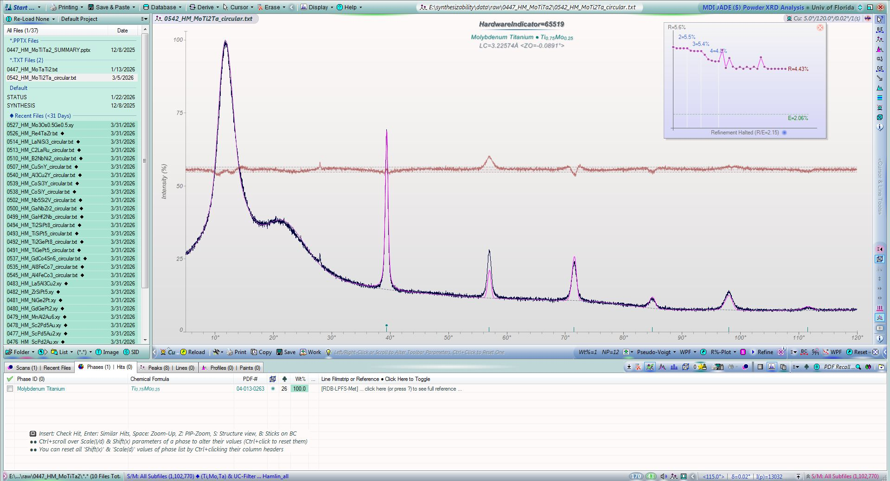
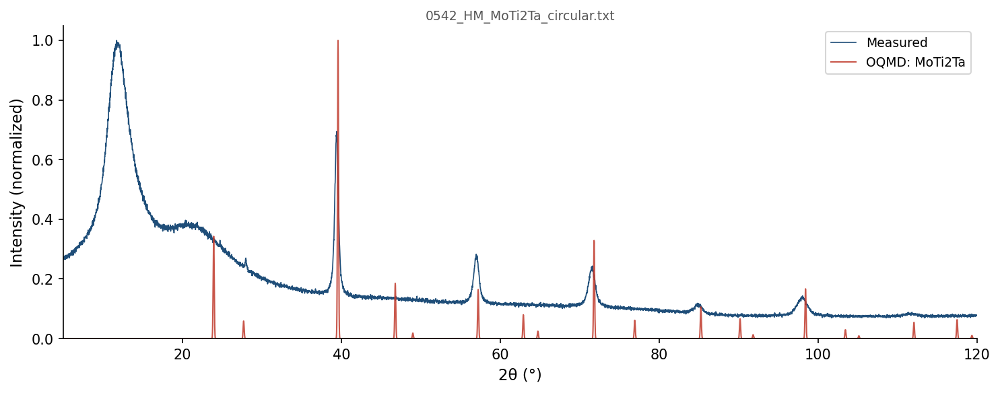
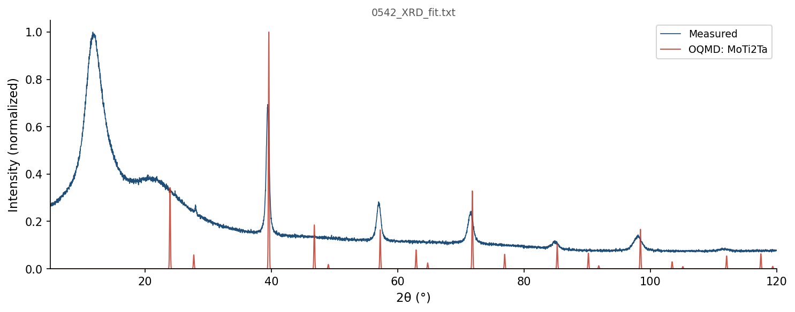

| Element | Expected (mol frac) | Measured (mol frac) | Δ (mol frac) | Δ (%) |
|---|---|---|---|---|
| Mo | 0.2500 | 0.2511 | +0.0011 | +0.11% |
| Ta | 0.2500 | 0.2499 | -0.0001 | -0.01% |
| Ti | 0.5000 | 0.4990 | -0.0010 | -0.10% |
488 entries in the Mo-Ta-Ti element system (17 on hull, 37 ICSD-tagged). Stability in meV/atom. Sorted most stable first.
| Composition | Stability (meV/atom) | ΔE (meV/atom) | ICSD | Space | Entry | CIF |
|---|---|---|---|---|---|---|
Mo3Ti8 |
-22 | -118.0 | Mo-Ti | 2131896 | CIF | |
Mo2Ti1 |
-20 | -178.6 | Mo-Ti | 1984786 | CIF | |
Mo1Ta1 |
-19 | -194.4 | ✓ | Mo-Ta | 2036487 | CIF |
Mo2Ta1 |
-19 | -172.7 | Mo-Ta | 1975029 | CIF | |
Mo2Ta1Ti2 |
-16 | -169.7 | Mo-Ta-Ti | 2149087 | CIF | |
Mo4Ti1 |
-13 | -155.2 | Mo-Ti | 1983474 | CIF | |
Mo15Ti1 |
-6 | -58.5 | Mo-Ti | 2132194 | CIF | |
Mo1Ta4 |
-3 | -92.5 | Mo-Ta | 2131555 | CIF | |
Mo1Ta1Ti1 |
-3 | -147.3 | Mo-Ta-Ti | 1483064 | CIF | |
Mo7Ta1 |
-1 | -65.9 | Mo-Ta | 1916311 | CIF | |
Mo3Ta5 |
-1 | -163.1 | Mo-Ta | 1975082 | CIF | |
Mo4Ta7 |
-1 | -159.1 | Mo-Ta | 2131870 | CIF | |
Mo3Ta8 |
+0 | -122.4 | Mo-Ta | 2131873 | CIF | |
Mo7Ti1 |
+0 | -102.5 | Mo-Ti | 1916280 | CIF | |
Mo1 |
+0 | 0.0 | Mo | 1215167 | CIF | |
Ta1 |
+0 | 0.0 | Ta | 1215197 | CIF | |
Ti1 |
+0 | 0.0 | ✓ | Ti | 9315 | CIF |
Mo1Ta1 |
+0 | -194.4 | Mo-Ta | 1522226 | CIF | |
Mo1Ta1 |
+0 | -194.4 | Mo-Ta | 306083 | CIF | |
Ta1 |
+0 | 0.1 | Ta | 2162725 | CIF | |
Ta1 |
+0 | 0.1 | Ta | 2162668 | CIF | |
Mo1Ta1 |
+0 | -194.3 | Mo-Ta | 1990193 | CIF | |
Ta1 |
+0 | 0.1 | Ta | 1522225 | CIF | |
Mo8Ti1 |
+0 | -92.6 | Mo-Ti | 1979296 | CIF | |
Mo1 |
+0 | 0.1 | Mo | 1522085 | CIF | |
Mo1 |
+0 | 0.1 | Mo | 1522090 | CIF | |
Mo7Ta1 |
+0 | -65.8 | Mo-Ta | 2132163 | CIF | |
Mo1 |
+0 | 0.3 | ✓ | Mo | 676469 | CIF |
Ta1 |
+0 | 0.3 | ✓ | Ta | 676531 | CIF |
Mo5Ti1 |
+1 | -130.9 | Mo-Ti | 1979294 | CIF | |
Ta1Ti5 |
+2 | 2.3 | Ta-Ti | 755676 | CIF | |
Ta1 |
+2 | 2.3 | ✓ | Ta | 670903 | CIF |
Ti1 |
+3 | 2.6 | ✓ | Ti | 2031311 | CIF |
Ta1 |
+3 | 2.6 | ✓ | Ta | 16591 | CIF |
Ta1 |
+3 | 2.7 | ✓ | Ta | 9754 | CIF |
Ta1 |
+3 | 2.7 | Ta | 1515748 | CIF | |
Ta1 |
+3 | 2.7 | ✓ | Ta | 9755 | CIF |
Mo8Ti3 |
+4 | -164.4 | Mo-Ti | 2131885 | CIF | |
Mo8Ta3 |
+4 | -137.7 | Mo-Ta | 2160124 | CIF | |
Mo3Ta1 |
+4 | -125.6 | Mo-Ta | 1375091 | CIF | |
Mo9Ta7 |
+4 | -181.9 | Mo-Ta | 2132120 | CIF | |
Ta14Ti1 |
+5 | 4.6 | Ta-Ti | 1515811 | CIF | |
Mo3Ti1 |
+5 | -159.3 | ✓ | Mo-Ti | 21460 | CIF |
Ta15Ti1 |
+8 | 7.8 | Ta-Ti | 1340417 | CIF | |
Ta1Ti1 |
+8 | 7.9 | Ta-Ti | 755668 | CIF | |
Ta1Ti1 |
+8 | 8.2 | Ta-Ti | 755689 | CIF | |
Ta2Ti1 |
+10 | 9.9 | Ta-Ti | 1515835 | CIF | |
Mo3Ta1 |
+11 | -118.6 | ✓ | Mo-Ta | 2036490 | CIF |
Mo3Ta1 |
+11 | -118.5 | Mo-Ta | 1916187 | CIF | |
Mo3Ta1 |
+13 | -117.3 | Mo-Ta | 311317 | CIF | |
Ti1 |
+14 | 13.5 | Ti | 755845 | CIF | |
Ti1 |
+14 | 13.6 | ✓ | Ti | 8079 | CIF |
Mo7Ta3 |
+14 | -142.0 | Mo-Ta | 2131829 | CIF | |
Ti1 |
+14 | 13.6 | ✓ | Ti | 2016208 | CIF |
Mo1Ta1 |
+14 | -180.8 | Mo-Ta | 337625 | CIF | |
Ti1 |
+14 | 13.7 | ✓ | Ti | 52003 | CIF |
Ti1 |
+14 | 13.7 | Ti | 755836 | CIF | |
Ti1 |
+14 | 13.7 | Ti | 755844 | CIF | |
Ti1 |
+14 | 13.7 | Ti | 755851 | CIF | |
Ti1 |
+14 | 13.7 | Ti | 755831 | CIF | |
Ti1 |
+14 | 13.8 | Ti | 755833 | CIF | |
Ti1 |
+14 | 13.8 | Ti | 755850 | CIF | |
Ti1 |
+14 | 13.8 | Ti | 755840 | CIF | |
Ti1 |
+14 | 13.8 | Ti | 1215380 | CIF | |
Ti1 |
+14 | 13.8 | Ti | 755821 | CIF | |
Ti1 |
+14 | 13.8 | Ti | 755848 | CIF | |
Ti1 |
+14 | 13.8 | ✓ | Ti | 117514 | CIF |
Ti1 |
+14 | 13.8 | Ti | 755847 | CIF | |
Ti1 |
+14 | 13.8 | Ti | 755838 | CIF | |
Mo5Ti2 |
+14 | -156.4 | Mo-Ti | 2160057 | CIF | |
Ti1 |
+14 | 13.8 | Ti | 755837 | CIF | |
Ti1 |
+14 | 13.8 | Ti | 755846 | CIF | |
Ti1 |
+14 | 13.8 | Ti | 755826 | CIF | |
Ti1 |
+14 | 13.8 | Ti | 755824 | CIF | |
Ti1 |
+14 | 13.8 | Ti | 755841 | CIF | |
Ti1 |
+14 | 13.8 | Ti | 755832 | CIF | |
Ti1 |
+14 | 13.9 | Ti | 755829 | CIF | |
Ti1 |
+14 | 13.9 | ✓ | Ti | 117243 | CIF |
Ti1 |
+14 | 13.9 | Ti | 755823 | CIF | |
Ti1 |
+14 | 13.9 | Ti | 755839 | CIF | |
Ti1 |
+14 | 13.9 | Ti | 755842 | CIF | |
Ti1 |
+14 | 13.9 | Ti | 755834 | CIF | |
Ti1 |
+14 | 13.9 | Ti | 755835 | CIF | |
Ti1 |
+14 | 13.9 | Ti | 755825 | CIF | |
Ti1 |
+14 | 13.9 | ✓ | Ti | 110171 | CIF |
Ti1 |
+14 | 13.9 | ✓ | Ti | 87084 | CIF |
Ti1 |
+14 | 13.9 | Ti | 755830 | CIF | |
Ti1 |
+14 | 13.9 | Ti | 755827 | CIF | |
Ti1 |
+14 | 13.9 | Ti | 755828 | CIF | |
Ti1 |
+14 | 14.0 | Ti | 755822 | CIF | |
Ti1 |
+14 | 14.0 | Ti | 755849 | CIF | |
Ta1Ti3 |
+14 | 14.2 | Ta-Ti | 2086035 | CIF | |
Ta1Ti3 |
+14 | 14.4 | Ta-Ti | 2121385 | CIF | |
Ti1 |
+14 | 14.5 | ✓ | Ti | 2030140 | CIF |
Ti1 |
+16 | 15.9 | Ti | 1215291 | CIF | |
Mo1Ti3 |
+17 | -91.2 | Mo-Ti | 754914 | CIF | |
Mo13Ti3 |
+17 | -129.4 | Mo-Ti | 2160214 | CIF | |
Mo1Ti2 |
+19 | -108.8 | Mo-Ti | 754903 | CIF | |
Mo3Ta1 |
+19 | -110.9 | Mo-Ta | 2121074 | CIF | |
Mo3Ta1 |
+19 | -110.9 | Mo-Ta | 2080600 | CIF | |
Mo1Ti1 |
+19 | -133.8 | Mo-Ti | 754906 | CIF | |
Mo3Ti2 |
+19 | -149.0 | Mo-Ti | 2160101 | CIF | |
Mo1Ti3 |
+20 | -87.8 | Mo-Ti | 2086005 | CIF | |
Ta1Ti2 |
+21 | 20.9 | Ta-Ti | 755685 | CIF | |
Mo1Ti1 |
+23 | -129.8 | Mo-Ti | 2085869 | CIF | |
Ta3Ti1 |
+23 | 23.4 | Ta-Ti | 2080728 | CIF | |
Mo1Ti1 |
+24 | -129.3 | Mo-Ti | 754904 | CIF | |
Ta1Ti1 |
+24 | 23.8 | Ta-Ti | 2080474 | CIF | |
Mo1Ti3 |
+24 | -83.7 | Mo-Ti | 2080648 | CIF | |
Ta3Ti1 |
+24 | 24.4 | Ta-Ti | 2082486 | CIF | |
Ta1Ti1 |
+25 | 24.7 | Ta-Ti | 2082632 | CIF | |
Ta3Ti1 |
+25 | 24.8 | Ta-Ti | 2121480 | CIF | |
Ta3Ti1 |
+25 | 24.8 | Ta-Ti | 2086171 | CIF | |
Mo3Ti1 |
+25 | -138.8 | Mo-Ti | 309610 | CIF | |
Mo1Ti1 |
+26 | -126.7 | Mo-Ti | 754901 | CIF | |
Mo1Ti1 |
+28 | -125.3 | Mo-Ti | 754897 | CIF | |
Mo3Ta1 |
+28 | -102.1 | Mo-Ta | 2082451 | CIF | |
Mo3Ta1 |
+28 | -102.1 | Mo-Ta | 2082334 | CIF | |
Ta1Ti1 |
+28 | 28.4 | Ta-Ti | 2084842 | CIF | |
Mo3Ta1 |
+29 | -101.1 | Mo-Ta | 2121462 | CIF | |
Mo3Ta1 |
+29 | -101.1 | Mo-Ta | 2086140 | CIF | |
Mo6Ta1Ti1 |
+30 | -132.2 | Mo-Ta-Ti | 1916329 | CIF | |
Mo3Ti1 |
+30 | -133.7 | Mo-Ti | 2086141 | CIF | |
Ta1Ti1 |
+30 | 30.4 | Ta-Ti | 755690 | CIF | |
Ta3Ti1 |
+30 | 30.5 | Ta-Ti | 310866 | CIF | |
Mo1Ti1 |
+31 | -122.1 | Mo-Ti | 754896 | CIF | |
Ta1 |
+31 | 31.4 | ✓ | Ta | 2030257 | CIF |
Ta3Ti4 |
+32 | 31.6 | Ta-Ti | 755663 | CIF | |
Ta1 |
+32 | 31.6 | Ta | 1280388 | CIF | |
Ta1 |
+32 | 31.6 | Ta | 1215019 | CIF | |
Mo1Ti2 |
+32 | -95.3 | Mo-Ti | 754917 | CIF | |
Ta1Ti1 |
+32 | 32.3 | Ta-Ti | 755666 | CIF | |
Mo1Ti1 |
+33 | -120.0 | Mo-Ti | 754900 | CIF | |
Ta1Ti1 |
+34 | 33.9 | Ta-Ti | 755662 | CIF | |
Mo3Ti1 |
+34 | -129.7 | Mo-Ti | 2121046 | CIF | |
Mo3Ti1 |
+34 | -129.7 | Mo-Ti | 2080512 | CIF | |
Ta1Ti1 |
+34 | 34.3 | Ta-Ti | 2124185 | CIF | |
Ta1Ti1 |
+34 | 34.3 | Ta-Ti | 2082186 | CIF | |
Mo1Ti1 |
+34 | -118.6 | Mo-Ti | 754892 | CIF | |
Mo1Ti1 |
+35 | -118.1 | Mo-Ti | 2080479 | CIF | |
Mo1Ti1 |
+35 | -118.0 | Mo-Ti | 754902 | CIF | |
Ta1Ti1 |
+35 | 35.2 | Ta-Ti | 755680 | CIF | |
Ta1Ti1 |
+35 | 35.5 | Ta-Ti | 2085899 | CIF | |
Ta1Ti1 |
+35 | 35.5 | Ta-Ti | 2121553 | CIF | |
Ta1Ti3 |
+36 | 35.6 | Ta-Ti | 755691 | CIF | |
Ta7Ti8 |
+37 | 36.5 | Ta-Ti | 1515764 | CIF | |
Ta1Ti2 |
+37 | 36.5 | Ta-Ti | 755661 | CIF | |
Ta1Ti3 |
+37 | 36.7 | Ta-Ti | 755679 | CIF | |
Ta2Ti1 |
+37 | 36.7 | Ta-Ti | 1515813 | CIF | |
Ta1Ti3 |
+37 | 36.8 | Ta-Ti | 321408 | CIF | |
Ta1Ti3 |
+37 | 36.9 | Ta-Ti | 755682 | CIF | |
Ta1Ti1 |
+37 | 37.1 | Ta-Ti | 755664 | CIF | |
Ta1Ti1 |
+38 | 37.8 | Ta-Ti | 755660 | CIF | |
Mo1Ti1 |
+38 | -115.0 | Mo-Ti | 2082191 | CIF | |
Mo1Ti1 |
+38 | -115.0 | Mo-Ti | 2082152 | CIF | |
Ti1 |
+39 | 38.6 | Ti | 1216096 | CIF | |
Mo1Ta3 |
+39 | -73.9 | Mo-Ta | 2086004 | CIF | |
Mo1Ta3 |
+39 | -73.9 | Mo-Ta | 2121371 | CIF | |
Mo1Ti1 |
+39 | -113.7 | Mo-Ti | 2082602 | CIF | |
Ta1Ti1 |
+39 | 39.5 | Ta-Ti | 755670 | CIF | |
Ta2Ti1 |
+40 | 39.6 | Ta-Ti | 1515812 | CIF | |
Mo1Ti1 |
+40 | -112.8 | Mo-Ti | 754921 | CIF | |
Mo1Ta3 |
+41 | -72.5 | Mo-Ta | 2080736 | CIF | |
Ta1Ti3 |
+41 | 41.1 | Ta-Ti | 311455 | CIF | |
Mo3Ti1 |
+41 | -122.6 | Mo-Ti | 2082341 | CIF | |
Mo3Ti1 |
+41 | -122.6 | Mo-Ti | 2082452 | CIF | |
Mo2Ta1Ti1 |
+42 | -138.5 | Mo-Ta-Ti | 448672 | CIF | |
Ta1Ti1 |
+42 | 42.5 | Ta-Ti | 755686 | CIF | |
Ta1Ti2 |
+43 | 42.8 | Ta-Ti | 755677 | CIF | |
Mo1Ta3 |
+43 | -69.7 | Mo-Ta | 2082301 | CIF | |
Mo1Ta3 |
+43 | -69.7 | Mo-Ta | 2082484 | CIF | |
Mo1Ta1Ti2 |
+43 | -67.1 | Mo-Ta-Ti | 1127433 | CIF | |
Ta1Ti1 |
+44 | 43.5 | Ta-Ti | 755667 | CIF | |
Mo1Ta3 |
+44 | -68.7 | ✓ | Mo-Ta | 2036488 | CIF |
Ta1Ti3 |
+44 | 44.5 | Ta-Ti | 345894 | CIF | |
Mo1Ta2Ti1 |
+45 | -67.4 | Mo-Ta-Ti | 530936 | CIF | |
Mo1Ta3 |
+45 | -68.2 | Mo-Ta | 314119 | CIF | |
Ta1Ti3 |
+45 | 45.3 | Ta-Ti | 1484878 | CIF | |
Ta1Ti3 |
+45 | 45.3 | Ta-Ti | 1484900 | CIF | |
Ta4Ti1 |
+45 | 45.4 | Ta-Ti | 1515815 | CIF | |
Ta7Ti8 |
+46 | 45.5 | Ta-Ti | 1515752 | CIF | |
Ta1Ti2 |
+46 | 45.6 | Ta-Ti | 755671 | CIF | |
Ta1Ti3 |
+46 | 45.9 | Ta-Ti | 2124179 | CIF | |
Ta17Ti12 |
+46 | 46.0 | Ta-Ti | 1577604 | CIF | |
Ta1Ti3 |
+47 | 46.5 | Ta-Ti | 300913 | CIF | |
Ta1Ti2 |
+47 | 46.8 | Ta-Ti | 1450287 | CIF | |
Mo1Ti3 |
+49 | -59.6 | Mo-Ti | 308554 | CIF | |
Ta7Ti8 |
+49 | 48.8 | Ta-Ti | 1515765 | CIF | |
Mo1Ti3 |
+49 | -59.3 | Mo-Ti | 2082302 | CIF | |
Mo1Ti3 |
+49 | -59.3 | Mo-Ti | 2082491 | CIF | |
Ta2Ti3 |
+49 | 49.5 | Ta-Ti | 1515814 | CIF | |
Ta1Ti4 |
+50 | 50.0 | Ta-Ti | 1515766 | CIF | |
Mo1Ti1 |
+50 | -102.5 | Mo-Ti | 754899 | CIF | |
Ta8Ti7 |
+55 | 55.3 | Ta-Ti | 1515847 | CIF | |
Ta2Ti3 |
+56 | 56.5 | Ta-Ti | 1515837 | CIF | |
Ta1Ti1 |
+59 | 59.5 | Ta-Ti | 1222021 | CIF | |
Mo1Ta1 |
+60 | -133.9 | Mo-Ta | 2080472 | CIF | |
Ta16Ti13 |
+62 | 62.2 | Ta-Ti | 1577624 | CIF | |
Ta1Ti2 |
+63 | 62.5 | Ta-Ti | 1515758 | CIF | |
Ta1Ti2 |
+63 | 63.2 | Ta-Ti | 755684 | CIF | |
Ta3Ti2 |
+64 | 64.2 | Ta-Ti | 1515757 | CIF | |
Mo1Ta1Ti1 |
+66 | -81.7 | Mo-Ta-Ti | 2085597 | CIF | |
Mo1Ta1Ti1 |
+66 | -81.7 | Mo-Ta-Ti | 2121130 | CIF | |
Ta1Ti2 |
+66 | 65.7 | Ta-Ti | 1515768 | CIF | |
Ta1Ti2 |
+68 | 68.2 | Ta-Ti | 755688 | CIF | |
Ta8Ti7 |
+69 | 68.9 | Ta-Ti | 1515817 | CIF | |
Ti1 |
+70 | 70.1 | Ti | 1214579 | CIF | |
Ti1 |
+70 | 70.1 | ✓ | Ti | 676147 | CIF |
Ti1 |
+70 | 70.1 | Ti | 1484872 | CIF | |
Ti1 |
+70 | 70.2 | Ti | 1215737 | CIF | |
Ta4Ti11 |
+70 | 70.3 | Ta-Ti | 1515818 | CIF | |
Mo1Ta1 |
+71 | -123.1 | Mo-Ta | 2082184 | CIF | |
Mo1Ta1 |
+71 | -123.1 | Mo-Ta | 2082151 | CIF | |
Ta1Ti1 |
+72 | 72.2 | Ta-Ti | 755669 | CIF | |
Mo1Ti1 |
+72 | -80.5 | Mo-Ti | 305227 | CIF | |
Mo1Ti1 |
+73 | -80.3 | Mo-Ti | 1522229 | CIF | |
Mo1Ti1 |
+73 | -80.3 | Mo-Ti | 1221209 | CIF | |
Ti1 |
+73 | 72.8 | Ti | 1215915 | CIF | |
Mo1Ti1 |
+73 | -80.2 | Mo-Ti | 1235897 | CIF | |
Ta1Ti1 |
+74 | 73.7 | Ta-Ti | 305863 | CIF | |
Ta1Ti14 |
+74 | 73.9 | Ta-Ti | 1515770 | CIF | |
Ti1 |
+74 | 73.9 | Ti | 1214668 | CIF | |
Ta1Ti2 |
+75 | 74.5 | Ta-Ti | 1515769 | CIF | |
Ta4Ti11 |
+77 | 77.2 | Ta-Ti | 1515848 | CIF | |
Mo1Ta1 |
+79 | -115.6 | Mo-Ta | 2085868 | CIF | |
Mo1Ta1 |
+79 | -115.6 | Mo-Ta | 2121541 | CIF | |
Ta1Ti1 |
+80 | 79.9 | Ta-Ti | 755687 | CIF | |
Ta5Ti24 |
+80 | 80.2 | Ta-Ti | 1577110 | CIF | |
Ta1Ti1 |
+80 | 80.3 | Ta-Ti | 1485330 | CIF | |
Ta4Ti11 |
+81 | 80.5 | Ta-Ti | 1515853 | CIF | |
Ta8Ti7 |
+83 | 82.5 | Ta-Ti | 1515816 | CIF | |
Ta1Ti1 |
+84 | 83.9 | Ta-Ti | 755681 | CIF | |
Ta1Ti1 |
+85 | 84.7 | Ta-Ti | 755673 | CIF | |
Mo1Ti1 |
+85 | -68.2 | Mo-Ti | 754918 | CIF | |
Mo1Ta2Ti1 |
+85 | -27.2 | Mo-Ta-Ti | 1127570 | CIF | |
Mo1Ta2Ti1 |
+85 | -27.2 | Mo-Ta-Ti | 1118727 | CIF | |
Ta1Ti1 |
+87 | 86.6 | Ta-Ti | 755665 | CIF | |
Ta2Ti1 |
+87 | 87.0 | Ta-Ti | 1485492 | CIF | |
Ta1Ti1 |
+88 | 88.2 | Ta-Ti | 755674 | CIF | |
Ta1 |
+88 | 88.2 | Ta | 1577325 | CIF | |
Ta1 |
+88 | 88.3 | Ta | 1214841 | CIF | |
Ta1Ti1 |
+89 | 88.9 | Ta-Ti | 1485078 | CIF | |
Ta1Ti1 |
+90 | 89.5 | Ta-Ti | 1485021 | CIF | |
Ta5Ti1 |
+92 | 92.0 | Ta-Ti | 1485824 | CIF | |
Mo1Ti5 |
+92 | 19.9 | Mo-Ti | 754908 | CIF | |
Ta7Ti6 |
+92 | 92.3 | Ta-Ti | 1484612 | CIF | |
Ta13Ti16 |
+93 | 92.8 | Ta-Ti | 1577569 | CIF | |
Mo2Ta1Ti1 |
+93 | -87.2 | Mo-Ta-Ti | 1119100 | CIF | |
Ta4Ti25 |
+94 | 93.9 | Ta-Ti | 1577479 | CIF | |
Mo1 |
+95 | 94.5 | Mo | 1280332 | CIF | |
Mo1 |
+95 | 94.5 | Mo | 1214989 | CIF | |
Mo1Ti1 |
+95 | -57.5 | Mo-Ti | 2084812 | CIF | |
Ta28Ti1 |
+98 | 97.8 | Ta-Ti | 1577622 | CIF | |
Ta3Ti1 |
+98 | 97.8 | Ta-Ti | 1487641 | CIF | |
Ta6Ti7 |
+100 | 99.9 | Ta-Ti | 1484684 | CIF | |
Mo1Ti3 |
+100 | -7.9 | Mo-Ti | 298023 | CIF | |
Ta1 |
+100 | 100.5 | Ta | 1485545 | CIF | |
Ta2Ti1 |
+101 | 101.2 | Ta-Ti | 1485789 | CIF | |
Ta7Ti5 |
+102 | 101.9 | Ta-Ti | 1487644 | CIF | |
Ta1Ti1 |
+102 | 102.0 | Ta-Ti | 1485340 | CIF | |
Ta1Ti2 |
+103 | 102.8 | Ta-Ti | 1485642 | CIF | |
Ta1Ti2 |
+103 | 102.8 | Ta-Ti | 1609965 | CIF | |
Mo1Ta1 |
+103 | -91.6 | Mo-Ta | 2082601 | CIF | |
Mo1Ta1 |
+103 | -91.5 | ✓ | Mo-Ta | 2036489 | CIF |
Ta5Ti1 |
+103 | 103.0 | Ta-Ti | 1485580 | CIF | |
Ta1Ti1 |
+106 | 106.0 | Ta-Ti | 1487648 | CIF | |
Ta12Ti1 |
+106 | 106.1 | Ta-Ti | 1484660 | CIF | |
Ta12Ti17 |
+107 | 107.4 | Ta-Ti | 1577294 | CIF | |
Ta1Ti28 |
+108 | 107.6 | Ta-Ti | 1577422 | CIF | |
Ta3Ti4 |
+109 | 108.6 | Ta-Ti | 755675 | CIF | |
Ta1Ti1 |
+109 | 108.6 | Ta-Ti | 2083298 | CIF | |
Ta1Ti1 |
+109 | 108.8 | Ta-Ti | 326947 | CIF | |
Ta1 |
+109 | 108.8 | Ta | 1484597 | CIF | |
Ta1 |
+109 | 109.3 | Ta | 1487640 | CIF | |
Ta5Ti8 |
+110 | 110.0 | Ta-Ti | 1484614 | CIF | |
Ta1 |
+111 | 111.0 | Ta | 1215910 | CIF | |
Ta10Ti3 |
+113 | 113.5 | Ta-Ti | 1484662 | CIF | |
Ta11Ti2 |
+114 | 113.6 | Ta-Ti | 1484600 | CIF | |
Ti1 |
+114 | 114.3 | ✓ | Ti | 8390 | CIF |
Ti1 |
+114 | 114.5 | Ti | 1215202 | CIF | |
Ta1Ti1 |
+115 | 115.3 | Ta-Ti | 1235950 | CIF | |
Ta1Ti2 |
+116 | 116.4 | Ta-Ti | 1610055 | CIF | |
Ta1 |
+117 | 116.5 | Ta | 1485143 | CIF | |
Ta1Ti1 |
+117 | 116.7 | Ta-Ti | 1231186 | CIF | |
Ta1Ti2 |
+117 | 116.9 | Ta-Ti | 1487650 | CIF | |
Ta5Ti1 |
+117 | 117.0 | Ta-Ti | 1487643 | CIF | |
Ta17Ti12 |
+117 | 117.1 | Ta-Ti | 1577272 | CIF | |
Ta4Ti9 |
+119 | 118.6 | Ta-Ti | 1484686 | CIF | |
Mo1Ta1 |
+121 | -73.8 | Mo-Ta | 2084811 | CIF | |
Ta25Ti4 |
+122 | 122.0 | Ta-Ti | 1577360 | CIF | |
Ta5Ti8 |
+122 | 122.2 | Ta-Ti | 1484613 | CIF | |
Mo1 |
+124 | 123.6 | Mo | 1215880 | CIF | |
Ti1 |
+124 | 124.3 | Ti | 1214935 | CIF | |
Ta7Ti5 |
+125 | 124.7 | Ta-Ti | 1487649 | CIF | |
Ta16Ti13 |
+126 | 126.0 | Ta-Ti | 1577550 | CIF | |
Ta3Ti1 |
+126 | 126.2 | Ta-Ti | 1487647 | CIF | |
Ta1Ti5 |
+126 | 126.3 | Ta-Ti | 1438059 | CIF | |
Ta1Ti1 |
+127 | 127.4 | Ta-Ti | 755672 | CIF | |
Mo1Ta1Ti2 |
+129 | 18.2 | Mo-Ta-Ti | 562214 | CIF | |
Ta3Ti10 |
+129 | 128.7 | Ta-Ti | 1484615 | CIF | |
Ta4Ti9 |
+132 | 131.8 | Ta-Ti | 1484685 | CIF | |
Ta3Ti1 |
+132 | 131.9 | Ta-Ti | 1484862 | CIF | |
Ta3Ti1 |
+132 | 131.9 | Ta-Ti | 1484893 | CIF | |
Ta3Ti1 |
+132 | 132.0 | Ta-Ti | 300324 | CIF | |
Mo1Ti3 |
+132 | 23.9 | Mo-Ti | 1339438 | CIF | |
Ta24Ti5 |
+134 | 133.7 | Ta-Ti | 1577492 | CIF | |
Ta9Ti4 |
+135 | 135.4 | Ta-Ti | 1484601 | CIF | |
Ta2Ti11 |
+137 | 136.8 | Ta-Ti | 1484687 | CIF | |
Ta8Ti5 |
+137 | 137.4 | Ta-Ti | 1484663 | CIF | |
Ta1Ti2 |
+139 | 138.7 | Ta-Ti | 1590689 | CIF | |
Ta1Ti2 |
+139 | 138.7 | Ta-Ti | 1485205 | CIF | |
Ta1 |
+142 | 142.1 | Ta | 1214930 | CIF | |
Ta10Ti3 |
+142 | 142.4 | Ta-Ti | 1484661 | CIF | |
Ta11Ti2 |
+143 | 143.4 | Ta-Ti | 1484598 | CIF | |
Ta13Ti16 |
+146 | 146.2 | Ta-Ti | 1577120 | CIF | |
Mo1Ti2 |
+149 | 22.2 | Mo-Ti | 754893 | CIF | |
Ta5Ti7 |
+151 | 150.6 | Ta-Ti | 1487658 | CIF | |
Ta7Ti5 |
+151 | 150.7 | Ta-Ti | 1487656 | CIF | |
Ta5Ti8 |
+153 | 153.5 | Ta-Ti | 1484616 | CIF | |
Ta4Ti9 |
+155 | 154.5 | Ta-Ti | 1484696 | CIF | |
Ta12Ti17 |
+155 | 155.0 | Ta-Ti | 1577071 | CIF | |
Mo1Ti3 |
+155 | 47.0 | Mo-Ti | 754923 | CIF | |
Mo1Ti3 |
+155 | 47.2 | Mo-Ti | 754911 | CIF | |
Mo1Ti3 |
+156 | 47.5 | Mo-Ti | 320152 | CIF | |
Ti1 |
+157 | 156.6 | Ti | 1215113 | CIF | |
Mo1Ti3 |
+161 | 52.4 | Mo-Ti | 344638 | CIF | |
Ta1Ti2 |
+162 | 162.4 | Ta-Ti | 1487660 | CIF | |
Ta1Ti5 |
+163 | 162.6 | Ta-Ti | 1487662 | CIF | |
Ta2Ti11 |
+165 | 164.8 | Ta-Ti | 1484702 | CIF | |
Ta1 |
+166 | 166.3 | ✓ | Ta | 2030158 | CIF |
Ta1 |
+167 | 167.0 | Ta | 1484950 | CIF | |
Ta1Ti5 |
+167 | 167.0 | Ta-Ti | 1487710 | CIF | |
Ta7Ti5 |
+167 | 167.3 | Ta-Ti | 1487704 | CIF | |
Ta1 |
+168 | 168.1 | Ta | 1215732 | CIF | |
Ta5Ti7 |
+168 | 168.4 | Ta-Ti | 1487706 | CIF | |
Ta3Ti10 |
+170 | 169.7 | Ta-Ti | 1484618 | CIF | |
Ta1Ti2 |
+170 | 170.3 | Ta-Ti | 1487708 | CIF | |
Ta3Ti1 |
+173 | 172.9 | Ta-Ti | 346483 | CIF | |
Ta10Ti3 |
+176 | 176.0 | Ta-Ti | 1484664 | CIF | |
Mo1Ti1 |
+176 | 23.0 | Mo-Ti | 754905 | CIF | |
Ta5Ti7 |
+176 | 176.2 | Ta-Ti | 1487709 | CIF | |
Ta11Ti2 |
+177 | 176.7 | Ta-Ti | 1484604 | CIF | |
Ta1Ti1 |
+178 | 177.5 | Ta-Ti | 337405 | CIF | |
Ta2Ti1 |
+178 | 178.2 | Ta-Ti | 1520691 | CIF | |
Ta9Ti4 |
+180 | 180.0 | Ta-Ti | 1484606 | CIF | |
Ta2Ti11 |
+181 | 180.8 | Ta-Ti | 1484697 | CIF | |
Mo2Ti1 |
+181 | 2.9 | Mo-Ti | 1592074 | CIF | |
Ta3Ti10 |
+183 | 182.7 | Ta-Ti | 1484617 | CIF | |
Ta1Ti12 |
+184 | 183.5 | Ta-Ti | 1484619 | CIF | |
Ta8Ti5 |
+185 | 184.5 | Ta-Ti | 1484666 | CIF | |
Ta7Ti5 |
+185 | 184.9 | Ta-Ti | 1487707 | CIF | |
Mo2Ti1 |
+188 | 9.2 | Mo-Ti | 1610062 | CIF | |
Ta5Ti1 |
+188 | 187.8 | Ta-Ti | 1487703 | CIF | |
Ta5Ti7 |
+189 | 189.4 | Ta-Ti | 1487661 | CIF | |
Ta5Ti1 |
+189 | 189.4 | Ta-Ti | 1487655 | CIF | |
Mo1Ti1 |
+191 | 37.7 | Mo-Ti | 754913 | CIF | |
Ti1 |
+193 | 192.5 | Ti | 1215024 | CIF | |
Ti1 |
+193 | 192.5 | Ti | 1280389 | CIF | |
Ta2Ti1 |
+193 | 193.0 | Ta-Ti | 1487705 | CIF | |
Ta2Ti1 |
+193 | 193.2 | Ta-Ti | 1487657 | CIF | |
Mo1Ti1 |
+194 | 41.1 | Mo-Ti | 754912 | CIF | |
Ta1Ti5 |
+197 | 196.6 | Ta-Ti | 1485699 | CIF | |
Ti1 |
+197 | 196.6 | Ti | 1577532 | CIF | |
Ta7Ti6 |
+197 | 196.7 | Ta-Ti | 1484607 | CIF | |
Ta7Ti5 |
+197 | 197.5 | Ta-Ti | 1487659 | CIF | |
Ti1 |
+198 | 197.7 | Ti | 1214846 | CIF | |
Mo1Ti2 |
+198 | 71.0 | Mo-Ti | 1520705 | CIF | |
Ta6Ti7 |
+199 | 198.7 | Ta-Ti | 1484667 | CIF | |
Ta1Ti5 |
+200 | 200.3 | Ta-Ti | 1485291 | CIF | |
Mo2Ti1 |
+201 | 22.6 | Mo-Ti | 1609972 | CIF | |
Ta9Ti4 |
+203 | 203.2 | Ta-Ti | 1484605 | CIF | |
Ta1Ti3 |
+204 | 203.6 | Ta-Ti | 1487730 | CIF | |
Ta8Ti5 |
+204 | 204.1 | Ta-Ti | 1484665 | CIF | |
Ta1 |
+207 | 206.8 | Ta | 1215286 | CIF | |
Mo1Ti1 |
+207 | 54.0 | Mo-Ti | 754898 | CIF | |
Ta1Ti5 |
+208 | 208.2 | Ta-Ti | 1487740 | CIF | |
Ta1Ti2 |
+210 | 210.0 | Ta-Ti | 1485770 | CIF | |
Ta3Ti1 |
+214 | 214.4 | Ta-Ti | 321997 | CIF | |
Ta5Ti7 |
+217 | 217.1 | Ta-Ti | 1487728 | CIF | |
Ta1Ti3 |
+217 | 217.5 | Ta-Ti | 1487745 | CIF | |
Mo1Ti2 |
+218 | 90.2 | Mo-Ti | 754916 | CIF | |
Ta1Ti2 |
+220 | 220.1 | Ta-Ti | 1485514 | CIF | |
Mo2Ta1 |
+221 | 48.2 | Mo-Ta | 1592122 | CIF | |
Mo3Ti4 |
+222 | 80.4 | Mo-Ti | 754907 | CIF | |
Ta1 |
+226 | 225.7 | ✓ | Ta | 2030259 | CIF |
Mo1Ti1 |
+226 | 73.2 | Mo-Ti | 754922 | CIF | |
Ta1Ti1 |
+229 | 228.6 | Ta-Ti | 1485844 | CIF | |
Mo2Ta1 |
+230 | 57.2 | Mo-Ta | 1610053 | CIF | |
Ta1Ti1 |
+240 | 239.8 | Ta-Ti | 1485712 | CIF | |
Mo2Ta1 |
+241 | 68.5 | Mo-Ta | 1609963 | CIF | |
Ti1 |
+242 | 241.5 | Ti | 1214757 | CIF | |
Ta5Ti7 |
+242 | 241.7 | Ta-Ti | 1487739 | CIF | |
Ta1 |
+242 | 242.3 | ✓ | Ta | 7517 | CIF |
Ta1 |
+242 | 242.4 | Ta | 1214574 | CIF | |
Ta2Ti1 |
+247 | 247.5 | Ta-Ti | 1609974 | CIF | |
Ta2Ti1 |
+247 | 247.5 | Ta-Ti | 1485842 | CIF | |
Ta1Ti1 |
+248 | 248.0 | Ta-Ti | 1487729 | CIF | |
Mo1Ta3 |
+253 | 139.6 | Mo-Ta | 303577 | CIF | |
Ti1 |
+253 | 253.2 | Ti | 1484703 | CIF | |
Ta1 |
+254 | 253.5 | Ta | 1215465 | CIF | |
Mo3Ti1 |
+256 | 92.3 | Mo-Ti | 299068 | CIF | |
Ta2Ti1 |
+259 | 258.8 | Ta-Ti | 1487727 | CIF | |
Ta2Ti1 |
+259 | 259.1 | Ta-Ti | 1610064 | CIF | |
Ta1 |
+261 | 260.8 | Ta | 1214663 | CIF | |
Mo1 |
+268 | 267.8 | Mo | 1214811 | CIF | |
Ti1 |
+269 | 268.6 | Ti | 1485151 | CIF | |
Ta2Ti1 |
+269 | 269.3 | Ta-Ti | 1485140 | CIF | |
Ta2Ti1 |
+269 | 269.3 | Ta-Ti | 1594346 | CIF | |
Ta1 |
+270 | 269.7 | Ta | 1216091 | CIF | |
Mo1Ti1 |
+280 | 126.8 | Mo-Ti | 326311 | CIF | |
Ta1 |
+280 | 280.2 | ✓ | Ta | 2030258 | CIF |
Ta1 |
+280 | 280.4 | Ta | 1215375 | CIF | |
Ti1 |
+283 | 282.8 | Ti | 1485752 | CIF | |
Mo1Ti2 |
+284 | 156.5 | Mo-Ti | 1609947 | CIF | |
Mo3Ti4 |
+295 | 152.7 | Mo-Ti | 754895 | CIF | |
Mo1Ti1 |
+306 | 153.4 | Mo-Ti | 2083268 | CIF | |
Mo1 |
+308 | 307.7 | Mo | 1214900 | CIF | |
Mo2Ti3 |
+311 | 173.3 | Mo-Ti | 427938 | CIF | |
Mo1Ta1 |
+321 | 126.3 | Mo-Ta | 2083267 | CIF | |
Mo1Ti2 |
+327 | 200.1 | Mo-Ti | 1590661 | CIF | |
Mo1Ti1 |
+329 | 175.9 | Mo-Ti | 1235898 | CIF | |
Mo1Ti1 |
+329 | 176.0 | Mo-Ti | 1230374 | CIF | |
Mo1 |
+330 | 329.9 | ✓ | Mo | 2030156 | CIF |
Mo1 |
+334 | 334.1 | Mo | 1215702 | CIF | |
Mo3Ta1 |
+341 | 211.1 | Mo-Ta | 300775 | CIF | |
Mo1 |
+362 | 362.4 | Mo | 1215256 | CIF | |
Mo1 |
+366 | 366.0 | Mo | 1214633 | CIF | |
Ta2Ti1 |
+367 | 366.6 | Ta-Ti | 1449761 | CIF | |
Ti1 |
+405 | 405.2 | Ti | 1215648 | CIF | |
Mo1 |
+406 | 405.7 | ✓ | Mo | 2031498 | CIF |
Mo1Ti1 |
+406 | 252.8 | Mo-Ti | 336769 | CIF | |
Mo1Ta3 |
+407 | 294.1 | Mo-Ta | 346345 | CIF | |
Mo1Ta3 |
+411 | 298.2 | Mo-Ta | 321859 | CIF | |
Ta1 |
+413 | 412.8 | Ta | 1215108 | CIF | |
Mo1 |
+416 | 415.6 | ✓ | Mo | 676152 | CIF |
Mo1 |
+416 | 416.0 | Mo | 1214544 | CIF | |
Ta2Ti3 |
+417 | 416.8 | Ta-Ti | 428750 | CIF | |
Ta1 |
+417 | 417.0 | Ta | 1215821 | CIF | |
Mo1Ta1 |
+421 | 226.3 | Mo-Ta | 327167 | CIF | |
Mo1 |
+421 | 420.8 | ✓ | Mo | 2030243 | CIF |
Mo1 |
+422 | 422.1 | Mo | 1215435 | CIF | |
Mo1 |
+429 | 429.0 | Mo | 1216061 | CIF | |
Mo3Ti1 |
+429 | 265.4 | Mo-Ti | 319096 | CIF | |
Mo1 |
+433 | 433.4 | ✓ | Mo | 2030388 | CIF |
Mo1 |
+434 | 434.3 | Mo | 1215345 | CIF | |
Mo3Ti4 |
+443 | 301.1 | Mo-Ti | 1450698 | CIF | |
Mo1 |
+458 | 458.0 | Mo | 1215791 | CIF | |
Mo3Ti1 |
+478 | 314.5 | Mo-Ti | 343582 | CIF | |
Mo3Ta1 |
+498 | 368.4 | Mo-Ta | 324661 | CIF | |
Mo3Ta1 |
+522 | 391.9 | Mo-Ta | 349147 | CIF | |
Ta1 |
+529 | 529.0 | Ta | 1214752 | CIF | |
Mo1Ta2 |
+535 | 388.4 | Mo-Ta | 1576974 | CIF | |
Mo1 |
+543 | 542.9 | Mo | 1215078 | CIF | |
Mo1Ta2 |
+547 | 400.0 | Mo-Ta | 1610036 | CIF | |
Mo1Ta2 |
+558 | 411.4 | Mo-Ta | 1609946 | CIF | |
Mo1Ta1 |
+577 | 382.3 | Mo-Ta | 1230369 | CIF | |
Mo1Ta1Ti1 |
+672 | 524.4 | Mo-Ta-Ti | 883260 | CIF | |
Mo1Ta2Ti2 |
+695 | 605.5 | Mo-Ta-Ti | 1235263 | CIF | |
Ta1 |
+758 | 757.6 | Ta | 1215643 | CIF | |
Mo1Ta2 |
+769 | 622.5 | Mo-Ta | 1416580 | CIF | |
Mo1Ti1 |
+820 | 667.3 | ✓ | Mo-Ti | 21459 | CIF |
Mo1 |
+835 | 835.0 | Mo | 1215613 | CIF | |
Ti1 |
+896 | 896.1 | Ti | 1216004 | CIF | |
Mo1Ti1 |
+917 | 763.6 | Mo-Ti | 1104413 | CIF | |
Mo1 |
+937 | 937.0 | Mo | 1214722 | CIF | |
Mo1Ta1Ti1 |
+947 | 799.3 | Mo-Ta-Ti | 962034 | CIF | |
Ta1 |
+948 | 947.9 | ✓ | Ta | 9753 | CIF |
Ta1 |
+948 | 948.4 | ✓ | Ta | 52302 | CIF |
Ta1Ti1 |
+987 | 986.8 | Ta-Ti | 1105048 | CIF | |
Mo1Ta1Ti1 |
+1054 | 906.4 | Mo-Ta-Ti | 993312 | CIF | |
Mo1Ta1 |
+1197 | 1002.2 | Mo-Ta | 1105268 | CIF | |
Ta1 |
+1210 | 1210.2 | ✓ | Ta | 9752 | CIF |
Mo2Ta1 |
+1218 | 1045.6 | Mo-Ta | 1416579 | CIF | |
Mo1 |
+1303 | 1302.7 | Mo | 1215969 | CIF | |
Ta2Ti1 |
+1339 | 1339.0 | Ta-Ti | 1234672 | CIF | |
Mo2Ti1 |
+1443 | 1264.8 | Mo-Ti | 1233860 | CIF | |
Mo1Ti1 |
+1561 | 1408.3 | Mo-Ti | 1226888 | CIF | |
Ta1 |
+1653 | 1653.4 | Ta | 1215999 | CIF | |
Ta1Ti1 |
+1688 | 1687.8 | Ta-Ti | 1227700 | CIF | |
Ti1 |
+2116 | 2116.2 | Ti | 1215559 | CIF | |
Mo1 |
+2237 | 2237.3 | Mo | 1215524 | CIF | |
Mo1Ti1 |
+2415 | 2262.3 | Mo-Ti | 1223403 | CIF | |
Mo1Ti2 |
+2485 | 2357.2 | Mo-Ti | 1238620 | CIF | |
Mo1Ta1 |
+2653 | 2459.0 | Mo-Ta | 1223398 | CIF | |
Ta1Ti1 |
+2654 | 2653.8 | Ta-Ti | 1224214 | CIF | |
Ta1 |
+2881 | 2880.9 | Ta | 1215554 | CIF | |
Ti1 |
+3159 | 3158.8 | Ti | 1215826 | CIF | |
Mo2Ti1 |
+3783 | 3604.7 | Mo-Ti | 1238621 | CIF |

| Phase | Formula | Crystal System | Space Group | Lattice Parameters (Å / °) | Bragg-R |
|---|---|---|---|---|---|
| Molybdenum Titanium | Ti0.75Mo0.25 | Cubic | Im-3m (229) | a = 3.22574(86) | 4.42% |


59 known superconductor(s) in the MoTi2Ta element system. Sorted by Tc descending. ■ closest composition
| Compound | Formula | Tc (K) | Reference |
|---|---|---|---|
| Ta1-xTix | Ta0.462Ti0.538 |
9.05 | Search |
| Ta1-xTix | Ta0.685Ti0.315 |
8.28 | Search |
| Ta0.52Ti0.48 | Ta0.52Ti0.48 |
7.86 | 10.1103/PhysRevLett.17.81 |
| Ti64Ta36 | Ta0.36Ti0.64 |
7.53 | Search |
| Mo3O5 | Mo3O5 |
7.20 | Search |
| Ta25Ti75 | Ta25Ti75 |
6.00 | Search |
| Ta | Ta1 |
4.48 | 10.1143/JPSJ.29.1209 |
| Ta | Ta1 |
4.48 | Search |
| Ta1 | Ta1 |
4.46 | 10.1143/JPSJ.28.380 |
| Ta | Ta1 |
4.46 | 10.1143/JPSJ.28.380 |
| Ta | Ta1 |
4.43 | Search |
| Ta | Ta1 |
4.42 | 10.1103/PhysRevB.6.2609 |
| Ta | Ta1 |
4.42 | 10.1103/PhysRev.123.1569 |
| Ta | Ta1 |
4.40 | 10.1103/PhysRevLett.79.4262 |
| Ta | Ta1 |
4.33 | Search |
| Ta | Ta1 |
4.31 | Search |
| Ta | Ta1 |
4.30 | 10.1103/PhysRev.112.31 |
| Mo0.16Ti0.84 | Mo0.16Ti0.84 |
4.25 | Search |
| Hf1-xTax | Ta1 |
4.21 | Search |
| Mo0.16Ti0.84 | Mo0.16Ti0.84 |
4.18 | Search |
| Mo0.16Ti0.84 | Mo0.16Ti0.84 |
4.18 | Search |
| (Ti,Mo) | Mo0.15Ti0.85 |
4.08 | 10.1103/PhysRevB.30.1253 |
| Ti1-xMox | Mo0.1633Ti0.8367 |
4.00 | Search |
| Ti1-xMox | Mo0.1215Ti0.8785 |
3.50 | Search |
| Mo0.1Ti0.9 | Mo0.1Ti0.9 |
3.25 | Search |
| Ti1-xMox | Mo0.0905Ti0.9095 |
3.05 | Search |
| Mo0.91Ti0.09 | Mo0.91Ti0.09 |
2.95 | Search |
| Mo0.913Ti0.087 | Mo0.913Ti0.087 |
2.95 | Search |
| Mo0.913Ti0.037 | Mo0.913Ti0.037 |
2.95 | Search |
| Ta0.05Ti0.95 | Ta0.05Ti0.95 |
2.90 | Search |
| Ti1-xMox | Mo0.0708Ti0.9292 |
2.80 | Search |
| Ti4O7 | Ti4O7 |
2.31 | Search |
| Mo0.04Ti0.96 | Mo0.04Ti0.96 |
2.00 | Search |
| Mo0.025Ti0.975 | Mo0.025Ti0.975 |
1.80 | Search |
| Ta0.025Ti0.975 | Ta0.025Ti0.975 |
1.30 | Search |
| O1Ti1 | O1Ti1 |
1.06 | Search |
| O1.07Ti1 | O1.07Ti1 |
1.00 | Search |
| TiOx | O1.07Ti1 |
1.00 | Search |
| Mo | Mo1 |
0.92 | Search |
| Mo | Mo1 |
0.92 | Search |
| Mo | Mo1 |
0.92 | 10.1103/PhysRev.129.1025 |
| Mo1 | Mo1 |
0.92 | Search |
| Mo | Mo1 |
0.90 | Search |
| TiOx | O0.95Ti1 |
0.80 | Search |
| TiOx | O0.92Ti1 |
0.72 | Search |
| TiOx | O0.91Ti1 |
0.70 | Search |
| TiOx | O1Ti1 |
0.64 | Search |
| O1Ti1 | O1Ti1 |
0.60 | Search |
| O1Ti1 | O1Ti1 |
0.58 | Search |
| TiOx | O1.06Ti1 |
0.54 | Search |
| Ti1-xAlx | Ti1 |
0.49 | 10.1103/PhysRevB.62.8695 |
| TiOx | O0.86Ti1 |
0.47 | Search |
| Ti1 | Ti1 |
0.40 | 10.1103/PhysRev.123.1569 |
| Ti1 | Ti1 |
0.40 | 10.1103/PhysRev.123.1569 |
| Ti | Ti1 |
0.40 | Search |
| Ti1-xRhx | Ti1 |
0.40 | Search |
| Ti | Ti1 |
0.40 | Search |
| Ti | Ti1 |
0.39 | Search |
| Ti | Ti1 |
0.34 | Search |